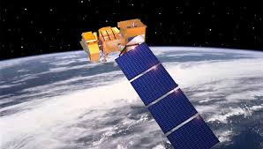
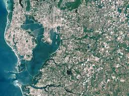

مقدمة
الآن، بعد أيام، أصبح مجال الاستشعار عن بعد ونظم المعلومات الجغرافية مثيرة وبراقة مع التوسع السريع الفرص. العديد من المنظمات تنفق مبالغ كبيرة من المال على هذه المجالات. هنا السؤال الذي يطرح نفسه لماذا هذه المجالات هي في غاية الأهمية في السنوات الأخيرة. سببين رئيسيين هي هناك وراء هذا. انقر على كل كائن لمعرفة المزيد. تقديم نظرة عامة تاريخ تطبيق
كانت هذه مقدمة موجزة للاستشعار عن بعد. للحصول على مزيد من المعلومات من نظام المعلومات الجغرافية (GIS) يرجى الرجوع إلى لوحات للطي أدناه. تقديم نظرة عامة تاريخ تطبيق
1) والآن، بعد أيام، العلماء والباحثين والطلاب، وحتى عامة الناس يبدون اهتماما كبيرا لفهم أفضل لبيئتنا. من خلال البيئة التي تعني الفضاء الجغرافي لمنطقة الدراسة، والأحداث التي تجري هناك. وبعبارة أخرى، لقد وصلنا إلى إدراك أن الفضاء الجغرافي جنبا إلى جنب مع البيانات التي تصف ذلك، هو جزء من عالمنا اليومي. تقريبا كل قرار نتخذه يتأثر أو تمليها بعض الحقائق الجغرافية.
2) تقدم في تكنولوجيا الفضاء المتطورة (التي يمكن أن توفر كمية كبيرة من البيانات المكانية)، جنبا إلى جنب مع انخفاض التكاليف من أجهزة وبرامج الكمبيوتر (والتي يمكن التعامل مع هذه البيانات) جعلت الاستشعار عن بعد ونظم المعلومات الجغرافية بأسعار معقولة ليس فقط الوضع البيئي / المكانية معقدة ولكن أيضا في متناول الجمهور على نحو متزايد على نطاق أوسع.
وبالتالي، يصبح ضرورة من ساعة ليكون على بينة من نظم المعلومات الجغرافية وذلك للمساعدة في الأرض والمجتمع من أجل مستقبل مستدام.
لمزيد من المعلومات حول نظم المعلومات الجغرافية، وانقر على لوحة قابلة للطي التي تحتوي على المعلومات ذات الصلة.
استشعار عن بعد
حرفيا الاستشعار عن بعد يعني الحصول على معلومات حول كائن أو منطقة أو ظاهرة بدون القادمة في اتصال مباشر معها. إذا كان لنا أن يذهب بها هذا المعنى للاستشعار عن بعد، ثم عددا من الأمور سوف تتعرض الاستشعار عن بعد، على سبيل المثال أجهزة قياس الزلازل، الخ متر بدون القادمة في اتصال مباشر مع التركيز زلزال، ويمكن قياس الزلازل قياس شدة الزلزال. وبالمثل دون ملامسة متر قاع المحيط يمكن قياس عمقه. ومع ذلك، الاستشعار عن بعد الحديث يعني الحصول على معلومات حول الأرض´ الأراضي والمياه الأسطح باستخدام تنعكس أو تنبعث الطاقة الكهرومغناطيسية. 
الاستشعار عن بعد يجعل من الممكن لجمع البيانات من المناطق الخطرة أو التي يصعب الوصول إليها. جهاز التحكم عن بعد تشمل تطبيقات الاستشعار عن رصد إزالة الغابات في مناطق مثل حوض الأمازون، وميزات الجليدية في المناطق القطبية الشمالية والمنطقة القطبية الجنوبية، وعمق سبر أعماق السواحل والمحيطات. جمع العسكري خلال الحرب الباردة جعلت استخدام مجموعة المواجهة من البيانات حول المناطق الحدودية الخطيرة. الاستشعار عن بعد أيضا محل جمع البيانات مكلفة وبطيئة على الأرض، وضمان في عملية مناطق أو الكائنات غير منزعجة.
منصات مدارية جمع ونقل البيانات من أجزاء مختلفة من الطيف الكهرومغناطيسي، الذي جنبا إلى جنب مع الاستشعار عن نطاق أوسع من الجو أو على الأرض وتحليلها، ويوفر للباحثين معلومات كافية لرصد الاتجاهات مثل النينو والظواهر طويلة وقصيرة الأجل الطبيعية الأخرى. وتشمل الاستخدامات غيره من مجالات مختلفة من علوم الأرض مثل إدارة الموارد الطبيعية والحقول الزراعية مثل استخدام الأراضي والحفظ، والأمن الوطني، والنفقات العامة، وجمع الأرضية والمواجهة على المناطق الحدودية.
الانضباط الحديثة للاستشعار عن بعد ونشأ مع تطور الرحلة. جعل المنطاد G. Tournachon (اسم مستعار نادر) صور لباريس من البالون له في عام 1858. الحمام رسول، والطائرات الورقية وصواريخ وبالونات بدون طيار كانت تستخدم أيضا للصور في وقت مبكر. مع استثناء من البالونات، وكانت هذه أول والصور الفردية لا مفيدة بشكل خاص لصنع خريطة أو لأغراض علمية.
وقد وضعت التصوير الجوي المنتظم لأغراض المراقبة والاستطلاع العسكرية تبدأ في الحرب العالمية الأولى وبلغت ذروتها خلال الحرب الباردة مع استخدام الطائرات المقاتلة المعدلة مثل ف 51، ف 38، RB-66 وF-4C أو مصممة خصيصا منصات جمع مثل U2 / TR-1، SR-71، A-5 وسلسلة OV-1 في كل من جمع النفقات العامة والمواجهة. وهناك تطور أكثر حداثة هو أن القرون استشعار متزايد أصغر مثل تلك المستخدمة من قبل المكلفين بإنفاذ القانون والعسكريين، في كل المنابر المأهولة وغير المأهولة. وميزة هذا النهج هو أن هذا يتطلب الحد الأدنى من التعديل على هيكل الطائرة معين. وتشمل تقنيات التصوير لاحقة الأشعة تحت الحمراء، التقليدي، دوبلر ورادار ذي الفتحة الاصطناعية.
تطوير الأقمار الصناعية في النصف الأخير من القرن 20th سمحت الاستشعار عن بعد للتقدم إلى المستوى العالمي حتى نهاية الحرب الباردة. الأجهزة على متن مختلف رصد الأرض والطقس الأقمار الصناعية مثل لاندسات، ونيمبوس والمزيد من البعثات الأخيرة مثل المقدمة RADARSAT وUARS قياسات عالمية من البيانات المختلفة لوالبحوث المدني، وأغراض عسكرية. وقد وفرت المسابر الفضائية إلى الكواكب الأخرى أيضا الفرصة لإجراء دراسات الاستشعار عن بعد في بيئات خارج كوكب الأرض، والرادار ذي الفتحة الاصطناعية على متن قدمت مركبة الفضاء ماجلان الخرائط الطبوغرافية التفصيلية لكوكب الزهرة، في حين أن الصكوك على متن الدراسات SOHOallowed التي يتعين القيام بها على الشمس والرياح الشمسية، فقط على سبيل المثال أمثلة قليلة.
وتشمل التطورات الأخيرة، التي تبدأ في 1960s و 1970s مع تطوير ومعالجة الصور من صور الأقمار الصناعية. وضعت العديد من المجموعات البحثية في وادي السليكون بما في ذلك مركز اميس التابع لناسا للأبحاث، GTE، وESL شركة تحويل فورييه التقنيات الرائدة لأول تحسنا ملحوظا من بيانات الصور. [بحاجة لمصدر] في عام 1999 أول قمر صناعي تجاري (IKONOS) جمع صور عالية النقاء جدا أطلق.

تطبيقات الاستشعار عن بعد:-
هذه هي التطبيقات الأساسية للمؤشر الجغرافي ..

هذه المادة تحتوي على المعلومات ذات الصلة حول الاستشعار عن بعد. تم تصميم هذه اللوحات جاهزة ومبرمجة من قبل انمول & أمبير؛ انمول
نظام المعلومات الجغرافية
انقر على كل كائن لمعرفة المزيد.
توسيع GIS هو نظام المعلومات الجغرافية الذي يتكون من ثلاث كلمات، بمعنى. الجغرافية ونظام المعلومات و. هنا كلمة جغرافي يتعامل مع كائنات فضائية أو الميزات التي يمكن الرجوع إليها أو ذات الصلة إلى موقع معين على سطح الأرض. قد يكون الهدف المادي / طبيعي أو قد تكون الثقافي / من صنع الإنسان. وبالمثل كلمة إعلامتتعامل مع حجم كبير من البيانات حول كائن معين على سطح الأرض. تتضمن البيانات مجموعة من الجوانب النوعية والكمية التي تعترض العالم الحقيقي اكتساب. المصطلح نظاميستخدم لتمثيل نهج النظم حيث (تتكون من عدد كبير من الأشياء / الميزات على سطح الأرض وخصائصها المعقدة) في بيئة معقدة وتقسيمها إلى مكوناتها من أجل التفاهم السهل والتعامل معها، ولكنه يعتبر لتشكيل متكامل كلها لإدارة وصنع القرار. الآن، بعد أيام، هذا ممكن في فترة قصيرة جدا من الزمن مع تطور أجهزة الكمبيوتر المتطورة والبرمجيات. ولذلك، GIS هو نظام المعلومات القائمة على الكمبيوتر الذي تولى مجموعة متنوعة من الصفات والخصائص لموقعها الجغرافي، ويساعد في التخطيط واتخاذ القرار.
مركز التدريب الدولي (ITC)، الذي يعرف هولندا نظام المعلومات الجغرافية (GIS) كما نظام محوسب يسهل مراحل إدخال البيانات، وتحليل البيانات وعرض البيانات وخصوصا في الحالات التي نتعامل معها الجغرافية المشار إليها البيانات.
الجمعية الهندية الجيوماتكس (ISG) & مركز تقديم طلبات الفضاء الهندية (ISRO)GIS يعرف بأنه النظام الذي يوفر آلية محوسبة لدمج مختلف مجموعات البيانات المعلومات الجغرافية وتحليلها من أجل توليد المعلومات ذات الصلة لاحتياجات التخطيط في السياق.
وفقا لمركز إدارة قواعد البيانات المكانية وحلول (CSDMS)، GIS هو أداة حاسوبية لرسم الخرائط وتحليل أشياء موجودة والأحداث التي تحدث واحد الأرض.
Burrough (1986) GIS يعرف بأنه مجموعة من الأدوات لجمع وتخزين واسترجاع في الإرادة، وتحويل وعرض البيانات المكانية من العالم الحقيقي لمجموعة معينة من الغرض.
Arnoff (1989) GIS يعرف بأنه نظام حاسوبي يوفر أربع مجموعات من قدرات للتعامل مع البيانات الجغرافية المشار إليها، بمعنى. إدخال البيانات، وإدارة البيانات (تخزين البيانات واسترجاعها)، وتحليل التلاعب وإخراج البيانات.
من التعريفات أعلاه، يمكننا أن نستنتج أن المستخدم GIS تتوقع دعما من النظام لإدخال البيانات الجغرافية المشار إليها لتحليلها بطرق مختلفة، وإنتاج الإخراج (الخرائط وغيرها) من البيانات. توجه نظم المعلومات الجغرافية على المفاهيم والأفكار من العديد من التخصصات المختلفة، مثل رسم الخرائط والعلوم، وعلوم الكمبيوتر، والهندسة، والعلوم البيئية، والجيوديسيا، هندسة المناظر الطبيعية، والقانون، التصويري، والسياسة العامة، الاستشعار عن بعد، والاحصاءات والمسح. لذلك، فإنه لا يشمل فقط دراسة القضايا الجوهرية الناشئة عن إنشاء ومعالجة وتخزين واستخدام المعلومات الجغرافية، لكنه يدرس أيضا آثار GIS على الأفراد والمجتمع وتأثيرات المجتمع على نظم المعلومات الجغرافية.

1) حفظ تقاليد عريقة في صنع خريطة كخلفية، GIS وقد وضعت خلال منتصف القرن 20th مع تطور علوم الكمبيوتر. ويجري تحليل البيانات من المواقع الجغرافية من قبل أجهزة الكمبيوتر في المؤسسات الحكومية والجامعات في الولايات المتحدة الأمريكية خلال 1950s و 1960s.
أول G.I.S. التشغيلية صحيح تم تطويره من قبل الدكتور روجر توملينسون، قسم الغابات والتنمية الريفية، كندا. كان يطلق عليه مثل كندا نظام المعلومات الجغرافية (سى جي آي إس)، وكان يستخدم لتخزين وتحليل ومعالجة البيانات الأراضي ذات الصلة. عرف الدكتور روجر Tomlison أيضا باسم والد G.I.S.في عام 1964، تم إنشاء مختبر للرسومات الحاسوب والتحليل المكاني في كلية هارفارد للتصميم هوارد T. فيشر. وضعت هذه المنظمة عددا من المفاهيم النظرية الهامة في التعامل مع البيانات المكانية و1970s وزعت رمز البرنامج المنوي والنظام مثل SYMAP, GRID and ODYSSEY. من وحي هذا التطور التجارية اللاحقة.
2) قبل أوائل 1980s، M & S الحاسبات (في وقت لاحق انترجراف) ومعهد بحوث النظم البيئية (ESRI) ظهر الباعة التجارية ونظم المعلومات الجغرافية البرمجيات. صدر ESRI ARC / معلومات وARC مشاهدة البرنامج في عام 1981 و 1992 على التوالي.
وبحلول نهاية القرن 20th، مكنت تطوير ARC GIS مشاهدة عرض البيانات من خلال شبكة الانترنت والقضاء على العديد من الأجهزة والترخيص نفقات حزم البرمجيات. ومنذ ذلك الحين عدد من المنظمات والجامعات التي كانت تقوم بها البحوث في مجال نظم المعلومات الجغرافية وتطوير برامج سهلة الاستعمال. الآن هناك عدد متزايد من حرة ومفتوحة المصدر GIS الحزم التي تعمل في مجموعة واسعة من أنظمة التشغيل وأداء مهام محددة. 
بعد أن المعرفة حول نظام الحاسوب وجود أنواع مختلفة من البيانات (المكانية والسمة)، دعونا نرى كيف ظائف نظم المعلومات الجغرافية. وأوضح ظيفة GIS في الخطوات التالية:
إدخال البيانات
يتم إدخال كل من البيانات المكانية والسمة في نظام الكمبيوتر عن طريق أجهزة الإدخال المختلفة مثل الماسح الضوئي، التحويل الرقمي، لوحة المفتاح، والماوس الخ سكانر، التحويل الرقمي، والماوس تستخدم لإدخال البيانات المكانية. البيانات السمة المتاحة والتقارير، يتم إدخال الجداول الخ من خلال لوحة المفاتيح. كما يوجه البيانات من مصادر مختلفة، لديهم مستويات مختلفة، التوقعات، الرجوع نظام الخ لذلك، هناك حاجة لتوحيد قاعدة بيانات لمعيار مشترك. برمجيات نظم المعلومات الجغرافية تمكن هذه العملية من قبلالمراجع الجغرافية أوالأغطية المطاطية طريقة. وهذا يعني تمتد من الخرائط في اتجاهات مختلفة بحيث يتطابق مع إحداثيات معروفة.
تخزين البيانات
الكيانات المكانية المختلفة التي تمثل ملامح مختلفة من العالم الحقيقي يمكن تخزينها في شكلين مختلفين في الكمبيوتر: في شكل خطوط المسح ومكافحة ناقلات الشكل. مطلوب معرفة هذه الأشكال التي يتم تخزين البيانات المكانية لصناع القرار لأنه يؤثر على دقة البيانات وتحليلها، والقدرة على تخزين الكمبيوتر الخ
في شكل خطوط المسح، وينقسم كامل منطقة الدراسة إلى الشبكة العادية أو خلايا مربع تنظيمها في صفوف وأعمدة. وتستخدم الخلايا الفردية لتخزين نقطة، خط، ومنطقة الكيانات. يتم تخزين البيانات نقطة في الخلايا الفردية. يتم تخزين بيانات الخط من خلال ربط الخلايا في خطوط. يتم تخزين وحدات المنطقة من خلال تجميع الخلايا في المضلعات. حجم خلية الشبكة مهم جدا لأنه يؤثر على دقة الملامح المكانية.

هذه المادة تحتوي على المعلومات ذات الصلة حول الاستشعار عن بعد. تم تصميم هذه اللوحات جاهزة ومبرمجة من قبل أنمو وأنمو
كان هذا ملخصا موجزا لنظام المعلومات الجغرافية (GIS). لمزيد من المعلومات من نظم المعلومات الجغرافية وRS مع أهمية المياه الجوفية انقر على الزر أدناه.

Anman انفوتيك. | صممه انمول & أمبير؛ انمول | مدرسة الآرية الدولية فاراناسي | التي تم إنشاؤها في برنامج Adobe Dreamweaver الإبداعية السحابية
الموقع صمم في HTML5 |
الخلفية التي تم إنشاؤها في بيكاسا بواسطة جوجل | حقوق المحتوى تنتمي إلى أصحابها كل منها.